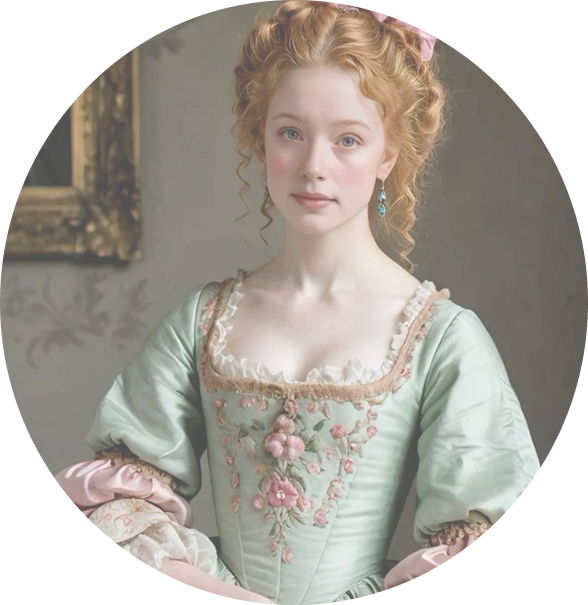
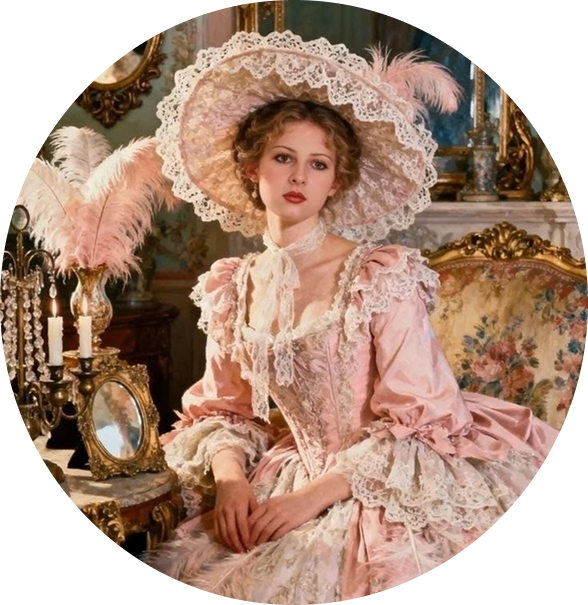
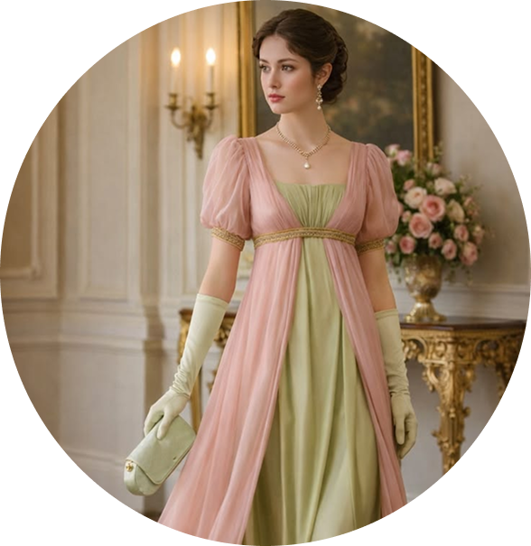
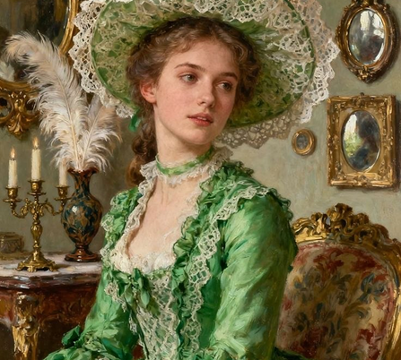
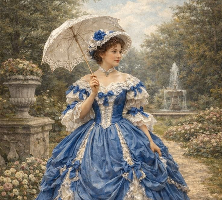

Каталог
Дамы

Барокко
Стиль барокко, расцветший в XVII веке, воплощает торжественную роскошь, театральность и стремление к величественной, почти скульптурной гармонии. В одежде он проявляется через объёмные силуэты, тяжёлые благородные ткани, обилие золотых и серебряных нитей, сложные кружевные воротники и пышные драпировки.

Рококо
Рококо, пришедший на смену барокко в первой половине XVIII века, отличается лёгкостью, игривой элегантностью и утончённой асимметрией. В моде этот стиль проявляется через нежные пастельные оттенки, воздушные шёлковые ткани и обилие декоративных деталей: бантов, кружева, рюшей и цветочных вышивок.

Романтизм
Романтизм в моде первой половины XIX века воспевает женственность, мечтательность и эмоциональную глубину, превращая одежду в поэтическое продолжение внутреннего мира. Для этого стиля характерны акцент на тонкой талии, пышные многослойные юбки и деликатные силуэты, созданные из лёгкого муслина, шёлка и воздушного тюля.
Рококо

«Зелёный шёпот Рококо»
Платье, в котором каждая прогулка становится придворным променадом, а вы — героиней собственного исторического романа.
